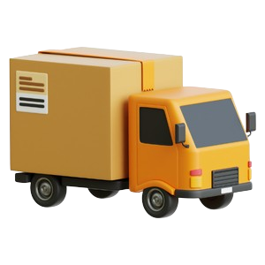

개인·법인 사업자 업종별 정책자금 활용 솔루션
2026년 법원제도로 빚을 합법적으로 탕감하세요
원금 최대 95% 탕감
이자 100% 전액 탕감
신용회복 & 경제적 재기 기회!
혹시 아래와 같은 상황에 계시나요?
무거운 채무로 일상에 지장이 생기고 있다면 2026년 채무탕감 법원제도를 통해 합법적으로 채무를 줄이세요
이자 100% 전액 탕감
신용회복 & 경제적 재기 기회!
혹시 아래와 같은 상황에 계시나요?
모르는 번호 독촉 전화 더 이상 받기 싫다
우편함에 쌓인 빨간 고지서 뜯어볼 엄두도 안 난다
카드 돌려막기 이제 정말 그만두고 싶다
더 이상 가족·지인에게 손 벌리기 싫다
가족에게 들킬까봐 매일이 조마조마하다
수많은 기업이 신뢰하고 있는
정책자금 컨설팅
정책자금 활용으로 성장한
대표님들의 실제 이야기를 확인해보세요
5,234건 이상의 기업이 선택한
정책자금으로 컨설팅
15년 이상 축적된 경험으로 기업 맞춤 자금 컨설팅의 성과를 검증해왔습니다.
0건
정책자금 및 경영지원
성공건수
성공건수
0%
정책자금(자문기준)
성공률
성공률
0%
기존건 외 추가조달
성공률
성공률
업종에 따라 달라지는
정책자금 범위와 활용전략
업종별 특성과 2025년 하반기 정책 방향을 정밀 진단해, 기업별 한도·금리 조건에 최적화된 맞춤 전략을 설계합니다.
-
도·소매업 최대 10억원
-
 제조업 최대 30억원
제조업 최대 30억원 -
서비스업 최대 10억원
-
IT 스타트업 최대 20억원
-
관광·레저업 최대 30억원
-
교육업 최대 10억원
-
 건설·인테리어 최대 20억원
건설·인테리어 최대 20억원 -

운수·물류업 최대 15억원
※금리·한도 등은 기업 규모와 정책별로 상이합니다.
정책자금 컨설팅 솔루션
간편한 절차
기업 운영에 필요한 자금을 복잡한 절차 없이 효율적으로 확보할 수 있습니다.
-
1:1 맞춤 전문상담
현재 기업의 업종·매출·규모·2025년 하반기 정책 방향을 분석해 적합한 자금제도와 지원전략을 제안드립니다.
-
ONE-STOP 프로세스
복잡한 절차를 간소화해, 필요 서류 확인 → 사업장 진단 → 자금 활용방안 제시까지 한 번에 진행됩니다.
-
최적화된 자금 확보
기업이 가진 조건과 정책요건을 종합 분석해 최대 한도와 승인 가능성을 높이는 맞춤형 전략을 수립합니다.
-
테스트 굿굿
기업이 가진 조건과 정책요건을 종합 분석해 최대 한도와 승인 가능성을 높이는 맞춤형 전략을 수립합니다.
오늘 자금한도&금리
무료진단 받으신 대표님 0명
2025년 하반기
기업 정책금융 컨설팅
무료상담 신청
오랜 경력을 가진 전문 컨설턴트가
대표님 기업에 필요한 한도·금리 조건을 비교 분석해
2025년 하반기 정책 활용 방안과
최적의 자금 운용 전략을 제안드립니다.